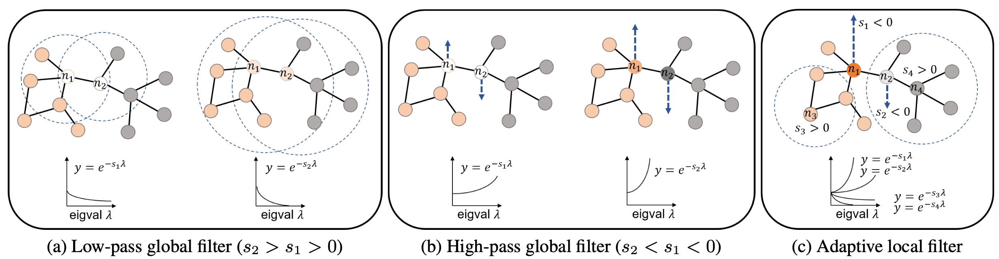
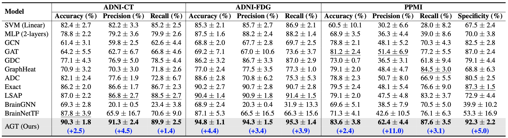
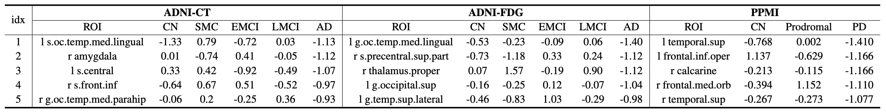
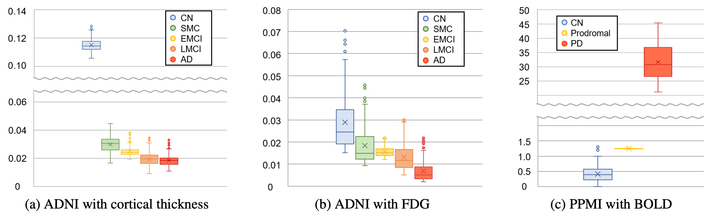
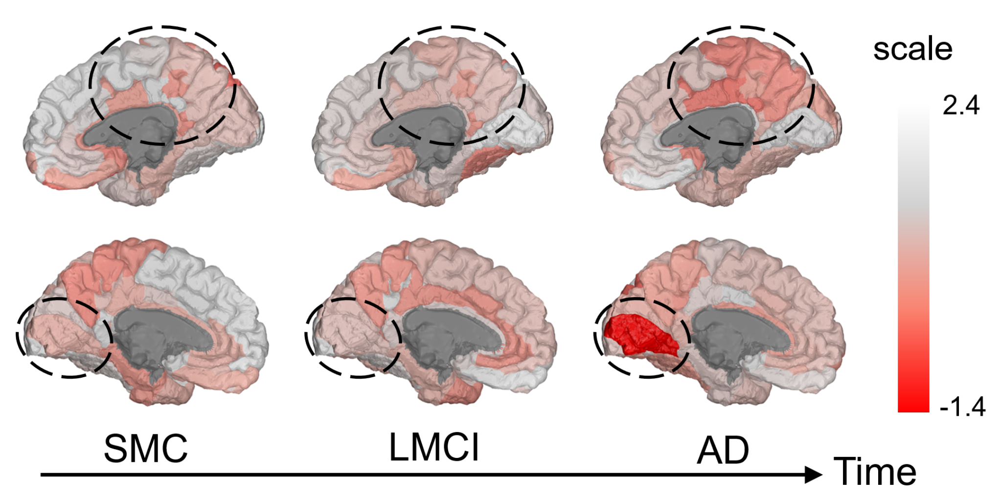
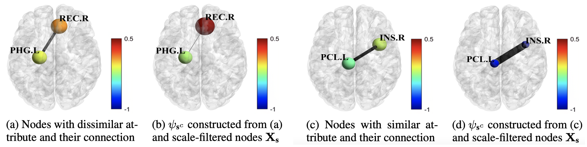

Figure: Comparison between global filters and an adaptive local filter. The global filter refers to the conventional filters whose range of feature aggregation is identical across the whole nodes. (a) A low-pass global filter smooths out features among neighboring nodes, (b) while a high-pass global filter accentuates the difference between a target node and its neighboring nodes. (c) Unlike these global filters, the adaptive local filter captures optimal bandwidths for each node with trainable node-wise scaling parameters.

Table: Classification performance on the ADNI and PPMI datasets with 5-fold cross-validation. The best results are marked in bold and the second-best results are indicated by an underline.

Table: Five brain regions with the smallest trained scales for the AD group in the ADNI dataset and the PD group in the PPMI dataset. The regional scales were averaged across 5 trained models from 5 folds.

Figure: Five brain regions with the smallest trained scales for the AD group in the ADNI dataset and the PD group in the PPMI dataset. The regional scales were averaged across 5 trained models from 5 folds.

Figure: Visualization of the trained scales on the ADNI-FDG experiment. Top: Trained scales of right cortex ROIs. Bottom: Trained scales of left cortex ROIs. All node-wise scales are averaged across 5 folds.

Figure: (a) and (c) are from a brain network (i.e., X and A) of subject #3130. Edges in (b) and (d) are the adaptive wavelet basis derived from a trained model. The node features in (b) become more discriminative from (a), while those in (d) become more similar compared to the nodes in (c).
We presented a novel wavelet-based GNN addressing challenges in analyzing the evolving dynamics of neurodegenerative diseases on brain connectomes. Our method captures the sequential variations within diagnostic groups with a group-wise temporal regularization. Also, it adaptively captures both homophily and heterophily within a graph by adjusting node-wise spectral bandwidth. As a result, our method outperformed various GNNs for brain connectome classification on two representative neurodegenerative disease benchmarks. Our framework offers clinical interpretability, showing significant potential to be applied in the analysis of various neurodegenerative diseases.
@article{cho2024neurodegenerative,
author = {Hyuna Cho and Jaeyoon Sim and Guorong Wu and Won Hwa Kim},
title = {Neurodegenerative Brain Network Classification via Adaptive Diffusion with Temporal Regularization},
journal = {ICML},
year = {2024},
}